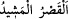

Sonunda ölüm hepsini sardı, helâk hepsine ulaştı. Geride onların yurtlarında yırtıcı
hayvanlar, evlerinde ise tilki ve kertenkeleler kaldı. Bahçelerinin ve mallarının yerini
yabânî ağaçlar, dikenler, dikenli çalılar ve kevenler aldı. Yerlerinde cinlerin
çalgılarının seslerinden ve aslanların kükremelerinden başka bir şey duyulmaz oldu.
Allah’ın azâbının şiddetinden ve O’nun cezâsını gerektirecek şeylerde ısrardan yine
O’na sığınırız.
“
(ulu saray)” Onu İrem oğlu Âd oğlu Şeddâd’ın yaptırdığı kasırdır.
Yeryüzünde onun benzeri inşâ edilmemiştir. İnsanların ünsiyetinden sonra ürküntü veren
bir yer olması ve mâmur olduktan sonra vîrâneye dönmesi bakımından onun durumu,
zikredilen kuyunun durumu gibidir. Orada nimetlerden, müreffeh bir hayattan, değerli
mülk ve düzgün bir ahâlî bulunduktan sonra duyulan cinlerin çalgı seslerinden ve
ürkütücü seslerden dolayı kimse oraya yaklaşmaya güç yetiremez. Çölde kaybolup
gittiler, bir daha da geri dönmediler.
Allah Teâlâ öğüt vermek, hatırlatmak, muhâlefet ve mâsıyetin kötü âkıbetinden
sakındırmak üzere onları bu ayette zikretti.
Kâşifî der ki: “Teysîr’de şöyle geçmektedir: Kâfir bir padişah müslüman vezire
öfkelendi, onu öldürmek istedi. Vezir, îmân ehli dört bin kişi ile birlikte kaçtı ve havası
güzel olan Hadramut denilen dağın yamacına yerleşti. Ne kadar kuyu kazsalar da suyu
acı oluyordu. Rical-i gaybdan birisi yanlarına geldi, kuyu kazmaları için bir yer
gösterdi. Orayı kazdıklarında son derece berrak, tatlı, hoş bir su çıktı.
Lezzeti, şekerkamışı sütü gibidir
Tatlılıkta, âb-ı hayâtın kız kardeşi gibidir
Kuyuyu açtılar; dibinden yukarısına kadar altın ve gümüş kerpiçlerle içini ördüler.
Rablerine ibadetle meşgul oldular.
Bir müddet sonra sürekli olarak şeytan, sâliha yaşlı bir kadın kılığında gelip kadınlara
kocalarının yokluğunda birbirleriyle sevişmeleri hususunda yol gösterdi. Bir başka
zaman zâhid bir insan suretinde onlara göründü. Erkeklere, kadınlarından uzak
kaldıkları zaman hayvanlara yakın olmalarını emretti.
Bu çirkin ameller onlar arasında yaygınlaşınca, Hak Teâlâ Hanzala veya Kuhâfe b.
Safvân’ı peygamber olarak onlara gönderdi. Ona inanmadılar. Suları yok oldu. Îmân
etmeye söz verdiler; Peygamber duâ etti, su tekrar geldi. Yine ferman dinlemediler,
îmân etmediler.
Hak Teâlâ yedi yıl, yedi ay, yedi gün sonra onlara azab göndereceğini duyurdu. Onlar,
altın, gümüş, yakut, mücevher ve murassa kerpiçlerle yüksek ve sağlam bir köşk
yaptılar. Verilen mühlet dolunca o köşke sığındılar, kapılarını sıkıca kapattılar. Cebrâil
(a.s.) geldi, onları köşkle birlikte yerin dibine batırdı. Onlardan geriye kuyuları kaldı.
Oradan siyah pis kokulu bir duman çıkar. O bölgede olanlar, helâk olmuş olanların
iniltilerini işitirler.”